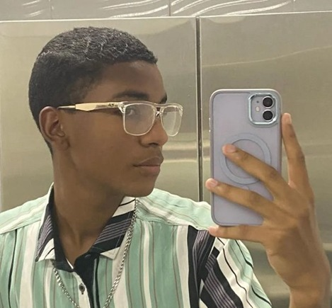

Ángel gabriel diz avila
17 años 13/07/2007
Venezuela - Colombia
documento: 1.127.626.229
dirección: calle 99
casa 99-11 san pablo
lugar de nacimiento:
Caracas

¿Quien SOY?
Hola, soy Angel Diz, y a continuacion les contare un poco sobre mi.
Soy una persona la cual le gusta aprender cosas nuevas,
sociable, dispuesto a darlo todo por la empresa.
También tengo mis puntos negativos como todos los demás,
pero no implica que sea peor persona.
Mis Hobbies:
Un poco de lo que me gusta
1. Me encanta el deporte, hacer ejercicio y mantenerme en forma.
2. También me gustan los videojuegos, mas que todo de autos.
3. Me encantan las películas de comedia, acción y terror
4. También mi tipo de música es Reggaetón Clásico, Bachata y la champeta
5. También me gusta pasear, viajar, me encanta conocer nuevos lugares, por ahora conozco panamá, pero se que conoceré mas lugares.
6. Lo que también me gusta es estar rodeado de gente que sepa convivir, con gente que me caiga súper bien eso me hace sentir feliz, ya que a veces no me gusta sentirme solo.
7. También me ayuda colaborar y ayudar en las personas en lo que se pueda.
8. Me encanta la playa, el sol, la arena, me hace sentir relajado.
9. Me encanta también tomarme fotos, guardar recuerdos, etc.
10. Y también amar a mi familia, siento que es lo mas importante
De todo.
Mis Proyectos:
Aquí les contare sobre uno de mis proyectos:
1. Uno de mis primeros proyectos fue vendiendo dulces.
2. También he vendido postres, y he ayudado a mi madre en su emprendimiento.
3. En Venezuela, también vendía lapiceros, lápices, y ese tipo de cosas.
4. También llegue a vender slimes, un producto que se volvió viral en 2015
5. Y por ultimo, hacia mis propios helados, tenia mis papeles con información y todo,
emprendimiento en el que me fue super bien la verdad.
Conocimientos:
Aqui les contare sobre uno de mis conocimientos:
1. SENA: A principios de año de 2023, hice una pagina la cual tenia que ver con el Sena, sus reglas y muchas cosas mas.
2. ONEPAGE: También hice esta ONEPAGE,
en la cual cuento un poco sobre mi, mis conocimientos, y muchas cosas mas.
3. EMPRESA REGISCAN: Junto a mis compañeros de media técnica,
diseñamos nuestra propia pagina,
la cual es llamada REGISCAN.
Experiencias
Aqui les contare un poco sobre mis Experiencias, Habilidades y Conocimientos
Experiencias:
Organización exitosa de un evento
comunitario durante un viaje voluntariado
en el extranjero. A pesar de los desafíos del idioma
y las diferencias culturales, logre trabajar en equipo.
y coordinar un exitoso evento.
Habilidades:
Capacidad de adaptación
en entornos diversos, trabajando
eficazmente en equipos multiculturales
Conocimientos:
Amplio conocimientos sobre
estrategias de marketing digital
y comportamiento del consumidor
en linea.